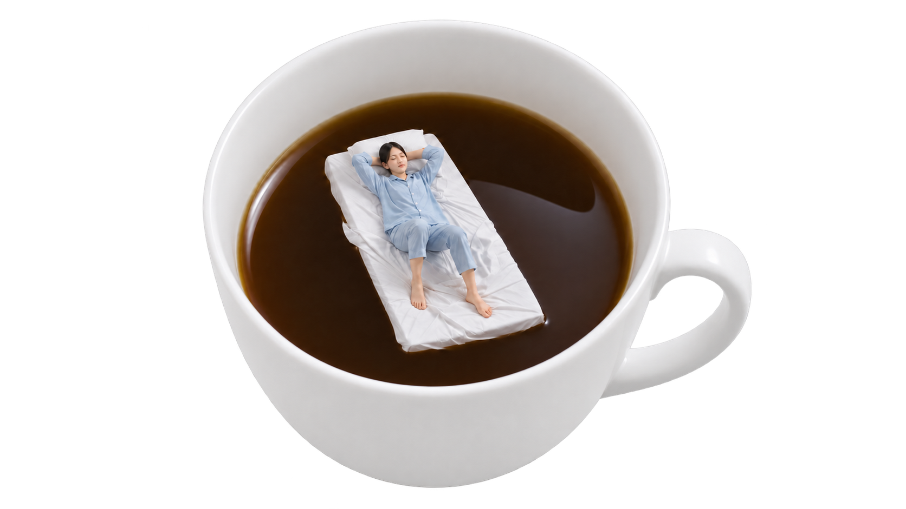

커피는 마시는 것보다 쏟는 것이 정신 차리는 데에 효과적입니다.
가끔은 하던 작업을 모두 엎어버리고 새로 시작할 때 더 좋은 결과물이 나오기도 합니다.
CHO YEBIN
조예빈
Graphic / Web / Content Design
- 2024.02
- 순천여자고등학교 졸업
- 2024.03
- 한국폴리텍대학 서울정수캠퍼스 입학
- 2027.02
- 한국폴리텍대학 서울정수캠퍼스 졸업 예정
TOOLS
Ai
Ps
Id
Pr
Figma
SELECTED WORK
I spilled coffee [on purpose]

제 작업 순서는 그리 체계적이지 못합니다. 아이디어 하나에 며칠을 쏟고 나서야 실현 가능성이나 표현 능력의 한계를 깨닫고 또 다시 엎어버리곤 합니다.
따라서 만족스러운 완성이라고 내보여드릴 작품은 없지만 미완성이고 부족하더라도 제가 했던 시도들을 제 스스로 애정 어린 시선으로 바라보는 마음을 가져보고자 합니다.
'뒤엎는다' 라는 주제로 저의 단점이 먼저 부각되어 보일 수 있지만, 다양한 컨셉을 시도하고 소화하기 위해 노력하는 저의 개성이자 장점이 될 수 있는 변곡점으로 승화해보고자 합니다.